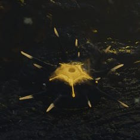

Bug Mine
Bug Mine

描述 信息
描述
When stepped on by a 生物 or otherwise damaged, it explodes and releases 酸, a damaging and slowing 效果.
类型
Flora
Locations
终结族 Missions
Bug Mine, is a black and yellow colored spiky 终结族 flora. It is considered an Environmental 危害.
效果
When stepped on by a 生物 or otherwise damaged, it explodes and releases 酸, a damaging and slowing 效果. 多个 instances of 酸 from these Bug Mines don't stack.
Detailed 属性
| Bug Trap | |
|---|---|
| 范围效果 | |
| 内圈半径 | 0.3 m |
| 外圈半径 | 2 m |
| 冲击波 Radius | 2.5 m |
| 伤害 | |
| 伤害 Element | 酸 |
| 内圈半径 | 0 酸 |
| 内圈 耐久 | 0 酸 |
| 穿透 | |
| 正面 | |
| 范围效果 效果 | |
| Status | 酸 溅射 |
| Status | 酸 溅射 |
| Status 力量 | 100 |
| 爆破力 | 10 |
| 硬直力度 | 20 |
| 推力 | 40 |
| 每秒伤害 酸 溅射 | |
|---|---|
| 伤害 | |
| Element | 酸 |
| 标准 | 3 酸 |
| 对耐久 | 0 酸 |
| 穿透 | |
| 正面 | Very 轻型 |
| 小角度 | Very 轻型 |
| 大角度 | Very 轻型 |
| 极大角度 | |
| 特殊 效果 | |
| 爆破力 | 0 |
| 硬直力度 | 0 |
| 推力 | 0 |
Locations
They can only be found on 终结族-infected areas, which also house all 终结族 Structures.
变更历史
补丁
描述
1.000.400
2024-06-13
变更
- The 酸 效果 applied by Bug Mines and other 终结族 now allows you to sprint while under the 效果.
- 酸液现在只会使你减速30%，而不是50%。
- 酸液持续时间从3秒提升至4秒。